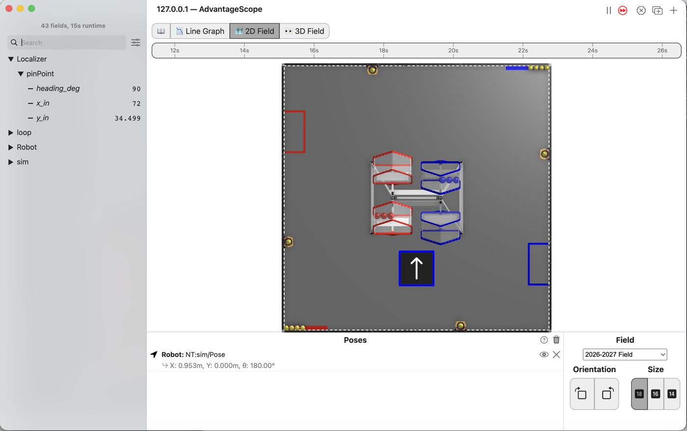
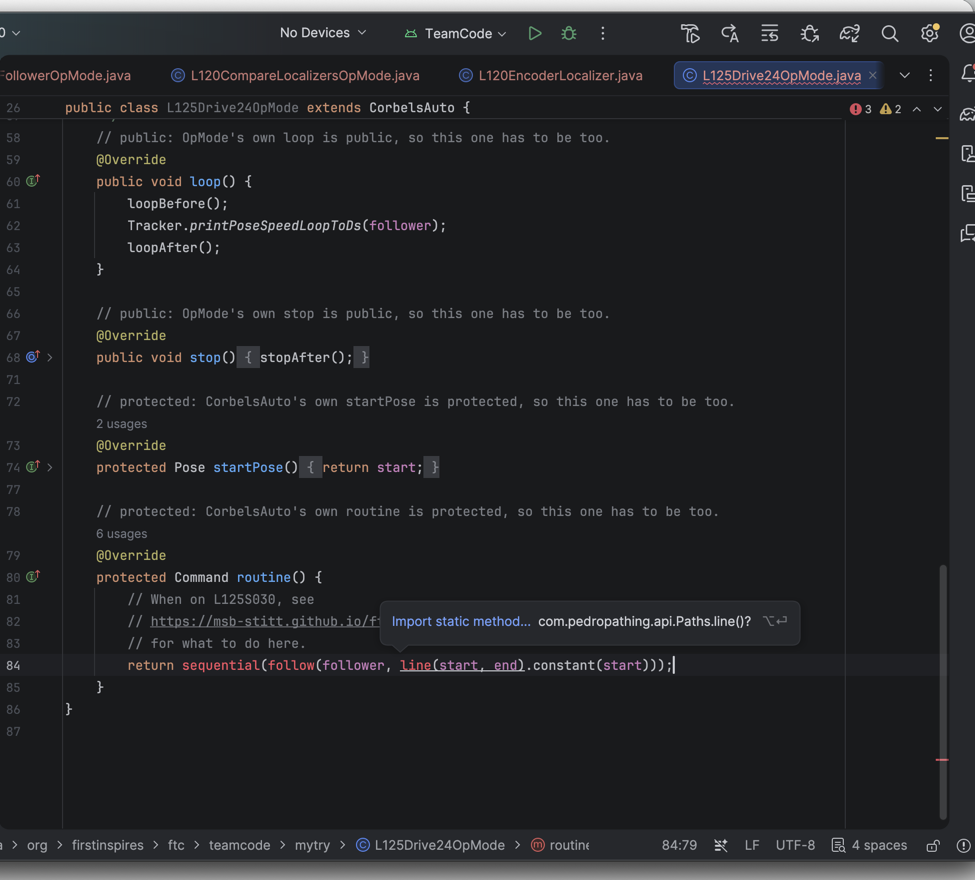

L125: the first autonomous¶

AdvantageScope’s 2D Field with the robot stopped 24 inches up the field from where it started, its arrow pointing up the field, and the list showing pinPoint/y_in at 34.499, x_in at 72 and heading_deg at 90.¶
The robot drives 24 inches forward on its own and stops there. Nobody touches a stick. The path follower does the driving, and you write one line to tell it where to go.
Before you start.
L120 is done. Nothing here uses L120’s code; the follower uses the robot’s own localizer.
AdvantageScope is installed on the same laptop. No gamepad is needed.
The robot, the Driver Station, a piece of tape, a tape measure, and about 1 m of clear floor in front of the robot for the last step.
Step L125S040 is written from the code and the old l9 page. It has not been performed on a robot
yet.
The steps¶
L125S010: copy the starter into mytry¶
Copy. In lessons, click L125Drive24OpMode once and copy it. Click mytry once and paste.
In the Copy Class box, click OK. If Android Studio asks whether to add the file to Git,
click Add.
Check. mytry holds L125Drive24OpMode, and the new file is open.
L125S020: switch your copy on¶
Change. Delete the line @Disabled, under the comment that names this step.
Check. Under the step’s comment, the next line reads
// public: the robot only runs an OpMode that is public.
L125S030: say where to go¶
An autonomous has no sticks to read. It has a routine, and the robot runs it after PLAY. The
routine hands back a command: a list of things to do, in order.
start and end are already near the top of the class, 24 inches apart along the field’s y. The
robot starts facing along y, so the line from one to the other is straight ahead. startPose()
tells the follower where the robot is at the start.
Change. In routine(), find the comment that names this step. Delete the line
return Command.NOOP; under it, and type:
// When on L125S030, see
// https://msb-stitt.github.io/ftc31459-26-27-biobuzz/guide/tasks/l125.html#l125s030
// for what to do here.
return sequential(follow(follower, line(start, end).constant(start)));
Read it from the inside out. line(start, end) is the path. .constant(start) holds the heading
start has the whole way. follow drives the path. sequential makes the list, and this list has
one thing in it.
sequential, follow and line turn red. Click each one and press Option+Enter. This time the
popup says Import static method…, because each is a method, not a class. Android Studio adds
an import static line at the top of the file for each one.

Android Studio with sequential, follow and line underlined in red and the popup offering Import static method… com.pedropathing.api.Paths.line()? with ⌥↩.¶
Simulator. In the Terminal, run:
./gradlew :TeamCode:simRun --args="mytry.L125Drive24OpMode"
AdvantageScope. Connect to the simulator as in L020, click 2D Field, and open the
Localizer folder, then pinPoint.
Check. The robot has driven up the field and stopped. y_in reads 34.5, which is 24 more than
the 10.5 it started at. x_in stays at 72 and heading_deg at 90.
L125S040: drive it on the floor¶
Send. Press Ctrl+C in the Terminal to stop the simulator. Put the robot on the floor with a
piece of tape at its front edge. Send the code to the robot, as in L050. On the Driver Station, pick
L125 Drive 24 from the autonomous list. Press INIT, then PLAY, and keep your hands off the sticks.
Check. The robot drives forward, slows down, and stops. Measure from the tape to the front edge. It is close to 24 inches.
If it didn’t, and nothing moves, the routine still says return Command.NOOP;, the command
that does nothing. LessonsTest.l125_autoDrives24InchesForwardAndStops fails with
the robot never started following a path.
If it didn’t, and nothing moves with the line typed, start and end are swapped. The robot is
standing at that path’s finish already, so it is done before it starts. The test fails with
ends 24 inches further along y expected:<34.5> but was:<10.5>.
If it didn’t, and the test fails with
and does not wander in x expected:<72.0> but was:<70.81415129095723>, the heading is
.constant(90). The number form is radians, so 90 is not 90 degrees.
If it didn’t, and on the floor it overshot or stopped short, that is the follower’s tuning, not
this line. L100 tunes it. If it curved, check the motor directions from L050S070 first. These two
are from the old l9 page, and neither has been seen on a robot.
What you just did. The follower is a library, used the way a team uses one: say where to go, and it works out the wheel powers. Nobody here wrote the path code.
.constant() holds one heading for the whole line, which is what this path wants. Pedro also has
.linear(), which turns from one heading to another. Before Pedro 3.0.1 it turned the wrong way on
a line path, reported in its issues #176 and #181. This project uses 3.0.1, which fixes it.
sequential takes a list, and this one has a single item in it. L130 puts a second item
after it, and that is the whole of what an autonomous routine is: a list of things to do in order.
Where next. L130 adds a second leg.